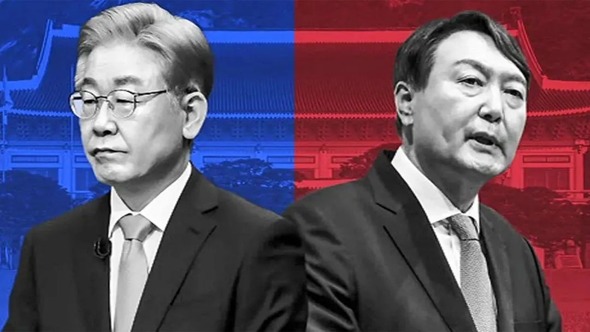
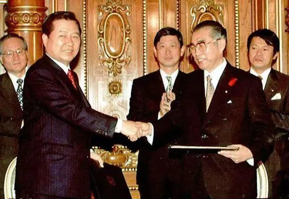

收录于合集
以下文章来源于欧亚系统科学研究会 ，作者林西东
 欧亚系统科学研究会 .
欧亚系统科学研究会 .
让系统增值，为创新添砖

导读
近日，韩国总统大选拉开帷幕。 尽 管文在寅在执政后期仍维持较高支持率，但其执政党推出的候选人李在明并没有获得明显优势，而是深陷与另一位候选人尹锡悦的“负面竞选”泥潭中。 两位候选人同时也就外交政策展开互相批评和攻击，并先后在美国著名期刊“外交事务”网站发文，打响外宣“擂台战”。其中，两人对中政策的不同路线，值得我们关注。
在野党国民力量党总统候选人尹锡悦认为，韩国已经屈从于中国的经济报复，而这种屈从是以牺牲自身安全利益为代价的。 萨德事件后，中国从各个角度施加了经济压力，而文在寅政府宣布的“三不”政策，削弱了韩国保护人民的主权，即便朝鲜的军事威胁与日俱增。在中美竞争中，韩国的战略模糊让韩美同盟出现离心倾向，韩国必须及时调整政策，以更积极主动的姿态展开周边外交，并通过更明确的站队来提升韩国的国际影响力。
执政党民主党的总统候选人李在明认为，韩国需延续文在寅政府的务实主义路线，与中国和朝鲜和平共处。 但这并不意味着韩国应该迁就中国，韩国应当提防中国日益强硬的行为，但公开对抗并不符合韩国的国家利益，也不符合韩美联盟的利益。同时，在朝核问题上采取循序渐进的方式，而不追求“一揽子”解决朝核问题。
总体而言，李在明和尹锡悦在维护韩美关系上表达了相似的态度。但是，李在明偏向于维持文在寅外交政策的连续性，而尹锡悦则主张更激进的变革，在对中、对朝和对日关系上，两人都产生了较大分歧。 因此，韩国大选的结局将对中韩关系的走向乃至于东北亚局势产生较大影响。欧亚系统科学研究会特编译本文，供读者思考。文章原刊于Foreign Affairs，仅代表作者本人观点。
“大胆向前一步”还是“坚持务实主义”?

▲ 执政党民主党总统候选人李在明（左）与在野党国民力量党总统候选人尹锡悦（右）。图源：互联网
01
尹锡悦: “韩国必须大胆向前一步”
短短半个多世纪内，韩国经历了一场戏剧性的转变：从一个饱受战争蹂躏的贫穷专制国家，一跃而成为一个经济充满活力、文化丰富、富有韧性的民主国家。它也是主要的贸易枢纽和技术强国。近年来它的流行文化也走向全球，防弹少年团和网飞出品的《鱿鱼游戏》已变得家喻户晓。
这个国家走过了漫长的道路，但它还能在国际社会中更进一步，变成一个更负责任和更受人尊敬的国家。而现任韩国政府一直受限于狭隘和短视的国家利益观念，它的外交政策几乎完全只为改善朝韩关系，这反而减弱了韩国在国际社会中的影响力。 最重要的是，对朝政策的不同态度使美韩联盟开始出现分歧：首尔关注与平壤方面的合作，而华盛顿则优先就朝核危机和人权问题与朝鲜展开对抗。
与朝鲜打交道是韩国政府的一项重要任务，但它不应该变成韩国外交的全部内容。与朝鲜的对话曾经有着明确目的，即朝鲜完全无核化。 然而，在文在寅总统的领导下，与朝鲜的对话本身已成为目的。 与此同时，韩国未能适应中美关系紧张加剧的局势，反而维持了战略模糊的做法，即不表明原则和立场。 韩国不愿在扰乱中美关系的种种议题上站队，这让人错认为 韩国一直在向中国倾斜，并疏远了它的长期盟友美国。
这种胆怯已经超出了韩国对自己邻国的态度。韩国经历了漫长而黑暗的独裁统治时期，但面对违反自由民主规范和引发其他民主国家愤怒的人权问题，韩国却默不作声。韩国是联合国绿色气候基金和国际疫苗研究所的所在地，在应对气候变化和应对新冠疫情方面处于领先地位。然而，现任政府未能利用这些资源应对我们这个时代最重要的全球挑战。
这是国际政治变化涌动的时刻。它召唤清晰、大胆、对原则承诺的举措。 韩国不应再困于朝鲜半岛，而应尝试成为我曾描述的 “全球枢纽国家” （a global pivotal state），一个凭借自由民主价值和实质性合作来促进自由、和平与繁荣的国家。
（一）与美国建立全面战略联盟
中美之间愈演愈烈的竞争给韩国和东亚其他国家带来一个战略困境。它们无法忽略与美国的长期合作关系，但它们也不愿加入中国反对的多边倡议，因为它们与中国的经济联系日益紧密。四方安全对话（Quadrilateral Security Dialogue）中，美国的三个伙伴——澳大利亚、印度和日本——对以明显激怒中国的方式进行合作持谨慎态度。2010年，当日本在中国钓鱼岛岛链附近扣押了一艘中国渔船，中国暂停了向日本出口稀土，这是制造半导体的重要材料。而澳大利亚主张对新冠病毒的确切来源进行彻查时，北京方面暂停了澳大利亚的煤炭进口，而这是澳洲主要的出口产品。
与这些国家一样，韩国也面临着中国的经济报复。 然而与它们不同的是，韩国以牺牲自身安全利益为代价屈服于中国的经济报复 。 2016 年，在首尔决定部署美国制造的终端高空区域防御 （THAAD，萨德）系统以防御朝鲜导弹后，中国从各个角度施加了经济压力。这包括鼓励抵制韩国产品、限制韩国进口和旅游业等。而文在寅政府为了安抚中国，以过度包容的姿态宣布“三不”政策：不额外部署萨德反导系统，不参与美国导弹防御网络，不与美日建立三边军事同盟。这些承诺削弱了韩国保护其人民的主权。 韩国永远不应该被迫在美国和中国之间做出选择；相反，它必须始终坚持以不损害本国核心安全利益为原则的立场。 确保对朝鲜威胁的威慑是韩国的主权问题，首尔方面应根据朝鲜日益增长的导弹威胁对额外部署萨德反导系统持开放态度。
与美国建立更深层次的联盟应该成为韩国外交政策的中心。 韩国受益于美国领导的全球和地区秩序，未来韩国应寻求与美国建立全面战略联盟，而美韩双边合作的性质也应适应新世纪的需要。仅平衡特定军事威胁的联盟已成为过去，特别是军事威胁如今已普遍地被经济报复和技术攻击的手段取代。这就是为什么现今美韩联盟涉及复杂的合作网络，囊括信息安全、供应链和公共卫生等一系列多元的问题。
通过全面的经济和安全对话，韩国和美国应在尖端半导体、电池、网络工具、太空旅行、核能、制药和绿色技术的发展方面进行合作。美韩政府应在这些领域的监管方面互通有无，以刺激发展和投资。
（二）与中朝打交道要采取主动
韩国还应重新调整与中国的复杂关系。 中国是韩国最大的贸易伙伴，韩国是中国商品的主要市场。尽管存在诸多经济联系，两国在安全问题上却存在很大分歧，尤其当它涉及朝鲜的时候。 中国政府似乎支持整个朝鲜半岛的无核化，而不非仅仅针对朝鲜，它的主要目标似乎是维护金氏政权的稳定。
首尔与北京合作的新时代应建立在求同存异的基础上，两国的差异不应影响经济合作。 两国应定期举行高级别战略对话，不仅是为了应对朝鲜问题，同时也要讨论气候变化、公共卫生和文化交流等问题。中韩关系应建立在尊重彼此利益和政策立场的基础上。正如韩国并不反对中国的“一带一路”倡议，还与中国在贸易和商业上展开合作，中国也应接受而非反对韩国与其盟国的合作体系。
与中国建立更紧密的合作关系将有助于韩国摆脱朝鲜问题的泥潭。 平壤的挑衅和首尔的屈从扭曲了朝韩关系。2020年，朝鲜炸毁了位于开城的朝韩联合联络办公室，文在寅政府建成它还不到两年。仅在上个月，朝鲜就发射了11枚导弹，但文在寅政府并未表态。更让事态恶化的是，韩国近年来默许了其军队部署的减弱，即便朝鲜的军事威胁与日俱增。对于韩国政府来说，保护人民的生命财产安全应该是首要任务。首尔必须与朝鲜的核能力与导弹能力相抗衡，而这需通过加强韩国的防空和导弹防御以及加强美国针对朝鲜的扩展威慑。韩国可以通过定期与美国举行桌面演习（tabletop exercises ）来实现这一目标，而文在寅执政期间仅仅进行了两次这类演习。这一目标也可通过为美韩于2016年建立的扩展威慑战略和协商小组（EDSCG）制定更具体的议程来达成。
韩国应拿出更清晰的朝鲜无核化方案，诸如设定明确的谈判筹码，为平壤的每一步行动制定相应的回应措施，使之接近无核化的目标。 平壤真诚且完整的公开现有核计划是恢复朝韩信任的第一步，届时韩国将放松对朝制裁，而这些都需平壤方面确保在无核化过程中的每一步都应可供核查且不可逆转。
谈判应该秉持这样一种理念：如果朝鲜领导人做出无核化的大胆决定，韩国将提供经济支持并讨论合作项目，其中包括朝韩共同发展计划，用以指导后无核化时代的朝韩经济关系。首尔还应提供人道主义支持，而这将切实帮助朝鲜人民并促进两国民众交流和文化交流。
（三）及时修复日韩关系
除了和周边国家打交道要更积极，韩国也应在更广泛的地区采取主动。相较于被动地适应和应对不断变化的国际环境，韩国应积极推动自由、开放和包容的印太秩序。韩国应参与四方安全对话小组、考虑分步骤加入多边区域合作倡议、并积极参与美日韩三边安全合作。
韩国也应重新考虑对日关系，认识到对日关系正常化的战略意义。 两国应重振1998年韩国总统金大中和日本首相小渊惠三发表的联合声明的合作精神，寻求解决两国在历史、贸易和安全合作等方面分歧的全面措施。最重要的是，韩国应该恢复首脑间的“穿梭外交”，以重塑两国之间的信任。韩国还应成立高级别谈判小组，与日本就合作和冲突问题进行全面谈判。两国也应致力于扩大群众间交流，特别是日韩年轻人间的交往，来恢复两国间的信任和信心。

▲ 1998年韩国总统金大中和日本首相小渊惠三发表《日韩共同宣言》，图源：环球网
1950年代，韩国因在战争中化为灰烬而完全依赖外援。仅仅 50 年后，它就成为了一个为他人提供援助的经济强国。 时至今日，韩国希望借分享本国在经济发展方面的大量专业经验，来回馈国际发展体系。 为了帮助世界更快地实现联合国的可持续发展目标，特别是缩小国家间和国内发展的差距，韩国应该扩大其海外发展援助计划。作为一个先进的民主国家和经济强国，韩国应在与追求民主的新兴国家的发展合作项目中发挥主导作用。
为确保网络世界的安全，韩国应建立国际网络合作网络，并应特别关注弥合发达国家与发展中国家间数字鸿沟的议题。 作为拥有高精尖技术的强大的民主国家，韩国将继续倡导开放和安全的网络空间。首尔也应升级本国的在线获取、管理和保护个人数据的网络系统，并加强其对跨境数据流动的监督。
韩国与其他国家一样，正遭受一场受疫情加剧的变革之风的冲击。韩国的未来将被气候变化、科技跃进以及国际体系的权力更替重塑。在这个极度不确定的时期，韩国人习惯的被动、传统的领导方式无法引导韩国走向未来。韩国能够成为一个充满活力、创新和有吸引力的大国，但前提是韩国政府能够运用创造性思维做出明确的选择。
02
李在明: “韩国应坚持务实主义路线”
韩国有很多值得庆祝的成就。它是世界十大经济体之一，坐拥大量位列前沿的新兴科技创新公司，韩流也已成为不容小觑的全球现象。韩国不仅可以、而且将在国际舞台上就新冠疫情、气候变化和全球供应链韧性等重要问题发挥领导作用。韩国会继续在由美国领导的、保护自由民主和全球经济增长的联盟体系中保持关键地位。然而，韩国在周边却面临重大挑战。 僵化的意识形态和空洞的口号无助于帮助这个国家应对挑战，它需要的是实用主义，也需要聚焦于问题的解决。
作为拥有超过1/4韩国人口且与朝鲜接壤的京畿道的知事，我一次又一次地吸取了这一教训。京畿道是半导体和高端显示器的重要产地，每当与朝鲜发生冲突，京畿道都会首先遭殃。京畿道的西海岸离中国不远，并且是美国在太平洋地区最大的军事基地汉弗莱营的所在地。京畿道的居民或许比任何人都更清楚韩国的未来是怎么与邻国和美国相关联的。
（一）必须和平解决朝核问题
韩国所面临的最棘手问题是朝鲜的核计划和导弹计划。朝鲜近来发射的弹道导弹令人深感担忧。通过韩美同盟，韩国将继续让朝鲜方面明白，韩国具备应对任何军事打击或挑衅的决心和能力。 然而针对朝鲜无核化的任何解决方案都必须是和平的。 剑拔弩张的做法收效甚微：比如，轻率地鼓吹对平壤进行先发制人的打击，会唤起已过时的冷战姿态，而这只会加剧恐惧和分裂。我们不能接受有可能引发核战的第二次朝鲜战争。当然，打赢战争固然重要，和平取胜却更重要。 这可以通过威慑、外交和对话的混用来实现。而拜登政府也在“校准且务实”（calibrated and practical）的对朝政策中强调了这种方法。
2019年2月，金正恩与时任美国总统的特朗普在河内峰会的失败表明，特朗普政府推行的“大交易”（Big Deal）举措，即在无核化的早期阶段让平壤一举放弃所有的核武器及其研发项目，是不太可能成功的。 我认为推动朝鲜先做出无核化的切实几步，并让其收获部分回报的做法要好得多。 这并非意味着立刻放松制裁，而是说，如果朝鲜采取了拥有切实意义的去核化举措，联合国和国际社会也应以适当减缓制裁作为回应。当然如果朝鲜未能兑现其无核化承诺，制裁应被立即恢复。为了创造有利于谈判的环境，包括韩国在内的国际社会都应支持对朝鲜的人道主义援助，包括且不限于提供新冠疫苗、医疗用品和帮助在两韩分裂期间离散的家庭团聚等。
朝鲜问题的复杂化源于中美竞争的不断加剧。 一些批评人士认为，韩国在世界两大超级大国之间保持“战略模糊”，给人一种韩国在不断疏远美国的错误印象。这种说法是完全错误的。韩国的立场没有任何含糊之处。美国是韩国的唯一条约盟友。 该联盟是在朝鲜战争的战火中建立起来的，并随着时间的推移发展成为全面的伙伴关系。2021 年 5 月，韩国总统文在寅和美国总统拜登发表的联合声明远远超出了安全优先事项，涵盖了应对新冠病毒、气候变化甚至太空探索等多个领域。这也意味着两国关系已经具有显着的广度和深度，未来几年还将不断升级。
（二）对周边国家的务实外交
韩国还必须与中国保持伙伴关系。 中国是韩国最大的贸易伙伴，占韩国贸易额的四分之一。在新冠疫情之前，数以百万计的韩国人和中国人进行跨国商务和旅游。实用主义表明，为了解决朝核危机、朝鲜半岛的和平与稳定、跨国环境污染和应对新冠疫情等关键问题，中韩需要和平共处。
这并不是说韩国应该迁就中国，而是韩国也有充分的理由担心北京方面日益强硬的行为。但公开对抗并不符合韩国的国家利益，也不符合韩美联盟的利益。 若不说服中国放弃与朝鲜在核计划方面的合作，朝鲜将更加依赖中国，韩国从而也更难找到解决平壤核计划和导弹计划的办法。
日韩关系是韩国下任总统需要应对的另一个难题。 作为同是东北亚的民主国家，且是韩国的主要贸易伙伴，令人遗憾的是东京方面不愿放弃其帝国历史的事实会继续阻碍日韩美三国合作。1965年韩日邦交正常化以来，两国在日本对朝鲜半岛的殖民历史及二战征兵等问题进行了争论，并由此建立了健康的双边关系，这是在经济合作及文化交流之外的另一领域。两国关系的高潮是1998年时任韩国总统的金大中和日本首相小渊惠三发表的联合声明：日本空前地表达了对殖民统治的悔恨和由衷的歉意。通过扩宽文化和民众之间的交流，双边关系开启了新篇章。
然而在 2018 年，在韩国最高法院裁定日本企业必须为二战使用韩籍强迫劳工支付赔偿后，东京方面对光刻胶、氟化氢和氟化聚酰亚胺三种核心化学品实施了报复性出口管制，而这将干扰韩国的高端制造业，尤其是电视和智能手机的半导体和高端显示器的生产。 这是为了平息历史恩怨而采取的令人震惊的经济胁迫行为，导致日韩关系陷入有史以来的最低点。 韩国政府和相关企业迅速从韩国和其他国家找到了高科技材料的替代来源，这一灵活的行动阻止了贸易战对全球半导体供应链的破坏。在两国促进经济、社会和外交合作之时，日韩都应回顾金大中和小渊惠三宣言的精神，真诚地致力于克服悲惨历史错误的遗产。
（三）韩国的地区和全球愿景
韩国致力于扩大与亚洲各国的联系，“新南方政策”就是最好的证明， 该政策加强了韩国与印度和东盟成员国的联系，而这也是韩国的次大贸易伙伴。韩国应继续扩大在创建自由和开放的印太地区上的帮助：自由贸易和人员交流的促进将支持该地区在公共卫生、绿色增长、数字创新和供应链弹性等方面的建设。
在气候变化方面，依赖韩国这样的核心制造业经济体来实现碳中和的时代已经过去了。 为促进可再生能源，韩国应大力投资可再生能源的基础设施建设，为未来产业发展奠定基础。其中一项投资可能是建设“能源高速公路”，即能够实现太阳能和风电转移和销售的智能电网。韩国政府还应成立一个致力于气候变化和能源的新部门，专门负责气候变化、绿色增长以及能源和工业部门的转型。
对于所有这些议题，国家共识至关重要。一个国家领导人必须能通过公开和民主的讨论让整个国家团结起来，并且相信公民的集体智慧，在充足的信息、时间和深思熟虑的条件下做出最佳决策。当下韩国最需要的，正是一个秉承实用主义心态且清晰认识到我们国家面临的挑战的领导人。
文章为欧亚系统科学研究会编辑，文章观点不代表本平台观点。